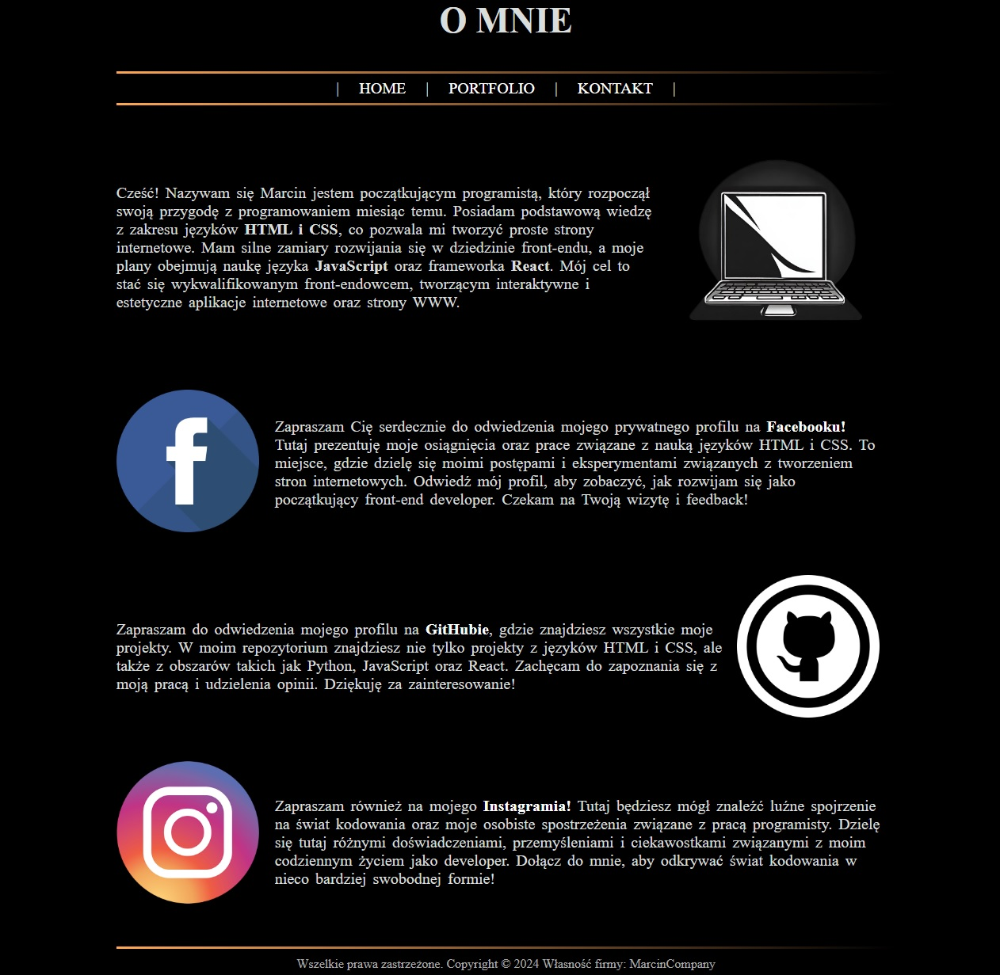

PORTFOLIO
Moja pierwsza strona internetowa to przygoda w świecie kodowania, która pozwoliła mi na poznanie podstaw języków HTML i CSS oraz nauczenie się tworzenia prostych, ale funkcjonalnych stron internetowych.
Strona ta skupia się na prezentacji mojej osoby oraz moich zainteresowań związanych z programowaniem. Została zbudowana przy użyciu języków HTML i CSS, co umożliwiło mi stworzenie struktury, układu oraz stylizacji strony.
Na stronie znajdują się podstawowe elementy takie jak nagłówek, sekcje, nagłówki i akapity tekstu, a także linki nawigacyjne. Wykorzystałem również kaskadowe arkusze stylów (CSS), aby nadać stronie odpowiedni wygląd i układ, dostosowany do moich preferencji wizualnych.
Mimo że moja pierwsza strona może być stosunkowo prosta w porównaniu z bardziej zaawansowanymi projektami, stanowi ona początkowy krok w mojej przygodzie z tworzeniem stron internetowych i jestem z niej dumny. To właśnie na tej stronie zaczęłem zgłębiać tajniki web developmentu i zdobywać doświadczenie, które później posłużyło mi do realizacji bardziej zaawansowanych projektów.
W dalszym rozwoju mojej strony będę kontynuował naukę i eksperymentowanie z nowymi technologiami i technikami, aby tworzyć coraz bardziej interesujące i interaktywne witryny internetowe. Moja pierwsza strona stanowi fundament mojej drogi jako web developera i z niecierpliwością czekam na to, co przyniesie przyszłość w świecie tworzenia stron internetowych.
